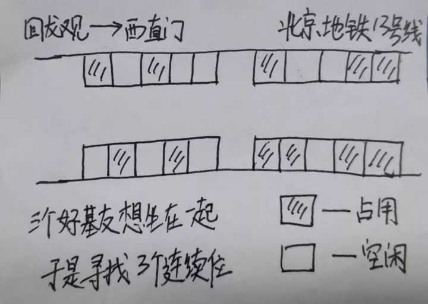
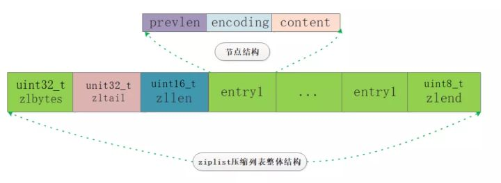
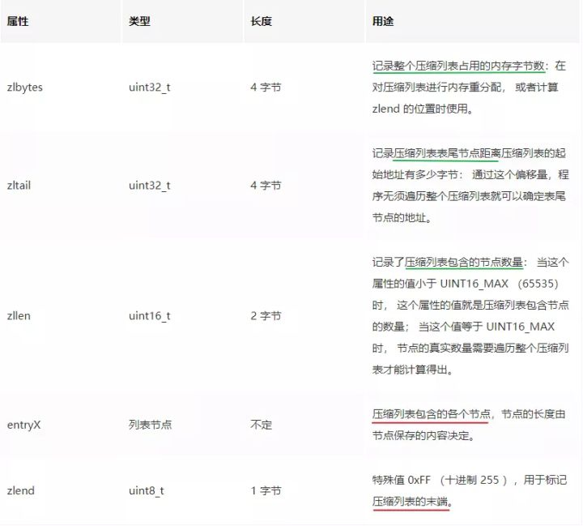
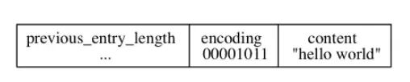
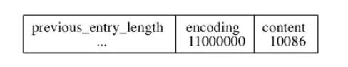
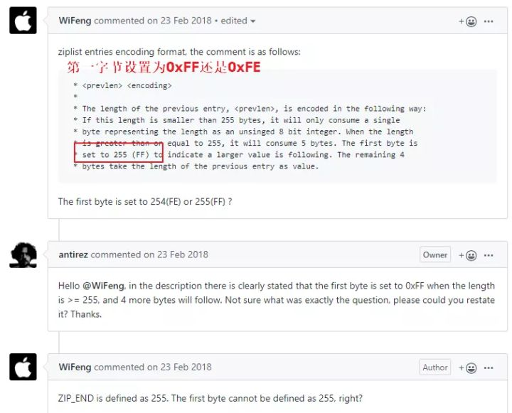
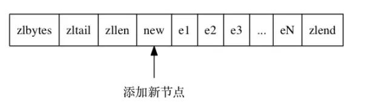
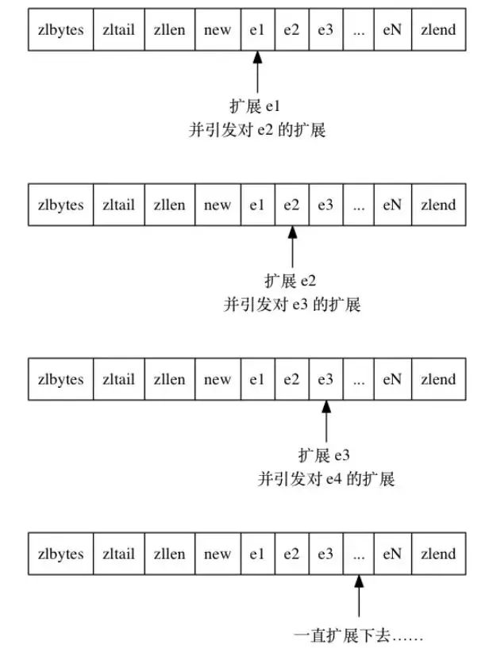
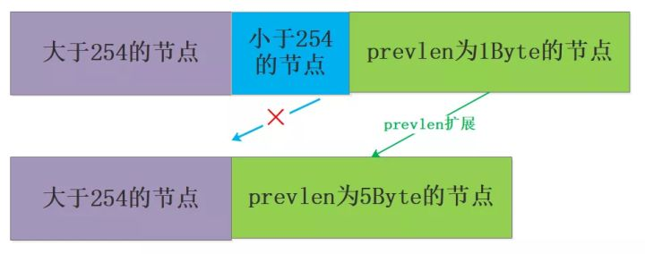

接着昨天的【决战西二旗】|Redis面试热点之底层实现篇继续来了解一下ziplist压缩列表这个数据结构。
你可能会抱有疑问：我只是使用Redis的功能并且公司的运维同事都已经搭建好了平台，只需要在线申请一下配置和获取连接的地址就可以愉快地使用了，为啥还要这么深入的理解底层的数据结构呢？有啥用呢？
其实这个问题可以分几个方面去回答吧，笔者试着去解释一下原因：
说了这么多，无非是想表达，带着思考去学习，受益的必然是你自己，大的方针政策是正确的，剩下的就是一步步去执行了，源码工程千千万，那也不必着急，核心的思想并没有那么多，怕什么真理无穷，进一寸有一寸的欢喜！
Q6：Redis的ziplist是如何实现的？压缩列表的连锁更新的原因了解吗？
前面的文章介绍了zset和hash在数据量少且长度满足一定条件的基础上就会选择使用ziplist来进行存储。
当然后面antirez又推出了quicklist的结构，后续可以聊聊quicklist，不过快速链表也是基于压缩列表实现的，ziplist是一种使用特殊编码的内存连续型的数据结构，让我们来一起揭开ziplist的神秘面纱吧。
先不看Redis的对ziplist的具体实现，我们先来想一下如果我们来设计这个数据结构需要做哪些方面的考虑呢？思考式地学习收获更大呦！

大概想了这么多，我们来看看Redis是如何考虑的，笔者又画了一张总览简图：

从图中我们基本上可以看到几个主要部分：zlbytes、zltail、zllen、zlentry、zlend。
来解释一下各个属性的含义，借鉴网上一张非常好的图，其中红线验证了我们的考虑点2、绿线验证了我们的考虑点3：

来看下ziplist.c中对ziplist的申请和扩容操作，加深对上面几个属性的理解：
/* Create a new empty ziplist. */
unsigned char *ziplistNew(void) {
unsigned int bytes = ZIPLIST_HEADER_SIZE+ZIPLIST_END_SIZE;
unsigned char *zl = zmalloc(bytes);
ZIPLIST_BYTES(zl) = intrev32ifbe(bytes);
ZIPLIST_TAIL_OFFSET(zl) = intrev32ifbe(ZIPLIST_HEADER_SIZE);
ZIPLIST_LENGTH(zl) = 0;
zl[bytes-1] = ZIP_END;
return zl;
}
/* Resize the ziplist. */
unsigned char *ziplistResize(unsigned char *zl, unsigned int len) {
zl = zrealloc(zl,len);
ZIPLIST_BYTES(zl) = intrev32ifbe(len);
zl[len-1] = ZIP_END;
return zl;
}我们再来看看zlentry的实现，encoding的具体内容取决于content的类型和长度，其中当content是字符串时encoding的首字节的高2bit表示字符串类型，当content是整数时，encoding的首字节高2bit固定为11，从Redis源码的注释中可以看的比较清楚，笔者再做一层汉语版的注释^_^：
/*
###########字符串存储详解###############
#### encoding部分分为三种类型：1字节、2字节、5字节 ####
#### 最高2bit表示是哪种长度的字符串 分别是00 01 10 各自对应1字节 2字节 5字节 ####
#### 当最高2bit=00时 表示encoding=1字节 剩余6bit 2^6=64 可表示范围0~63####
#### 当最高2bit=01时 表示encoding=2字节 剩余14bit 2^14=16384 可表示范围0~16383####
#### 当最高2bit=11时 表示encoding=5字节 比较特殊 用后4字节 剩余32bit 2^32=42亿多####
* |00pppppp| - 1 byte
* String value with length less than or equal to 63 bytes (6 bits).
* "pppppp" represents the unsigned 6 bit length.
* |01pppppp|qqqqqqqq| - 2 bytes
* String value with length less than or equal to 16383 bytes (14 bits).
* IMPORTANT: The 14 bit number is stored in big endian.
* |10000000|qqqqqqqq|rrrrrrrr|ssssssss|tttttttt| - 5 bytes
* String value with length greater than or equal to 16384 bytes.
* Only the 4 bytes following the first byte represents the length
* up to 32^2-1. The 6 lower bits of the first byte are not used and
* are set to zero.
* IMPORTANT: The 32 bit number is stored in big endian.
*########################字符串存储和整数存储的分界线####################*
*#### 高2bit固定为11 其后2bit 分别为00 01 10 11 表示存储的整数类型
* |11000000| - 3 bytes
* Integer encoded as int16_t (2 bytes).
* |11010000| - 5 bytes
* Integer encoded as int32_t (4 bytes).
* |11100000| - 9 bytes
* Integer encoded as int64_t (8 bytes).
* |11110000| - 4 bytes
* Integer encoded as 24 bit signed (3 bytes).
* |11111110| - 2 bytes
* Integer encoded as 8 bit signed (1 byte).
* |1111xxxx| - (with xxxx between 0000 and 1101) immediate 4 bit integer.
* Unsigned integer from 0 to 12. The encoded value is actually from
* 1 to 13 because 0000 and 1111 can not be used, so 1 should be
* subtracted from the encoded 4 bit value to obtain the right value.
* |11111111| - End of ziplist special entry.
*/content保存节点内容，其内容可以是字节数组和各种类型的整数，它的类型和长度决定了encoding的编码，对照上面的注释来看两个例子吧：

保存字节数组：编码的最高两位00表示节点保存的是一个字节数组，编码的后六位001011记录了字节数组的长度11，content 属性保存着节点的值 "hello world"。

保存整数：编码为11000000表示节点保存的是一个int16_t类型的整数值，content属性保存着节点的值10086。
最后来说一下prevlen这个属性，该属性也比较关键，前面一直在说压缩列表是为了节约内存设计的，然而prevlen属性就恰好起到了这个作用，回想一下链表要想获取前面的节点需要使用指针实现，压缩列表由于元素的多样性也无法像数组一样来实现，所以使用prevlen属性记录前一个节点的大小来进行指向。
prevlen属性以字节为单位，记录了压缩列表中前一个节点的长度，其长度可以是 1 字节或者 5 字节：
思考：注意一下这里的第一字节设置的是0xFE而不是0xFF，想下这是为什么呢？
没错！前面提到了zlend是个特殊值设置为0xFF表示压缩列表的结束，因此这里不可以设置为0xFF，关于这个问题在redis有个issue，有人提出来antirez的ziplist中的注释写的不对，最终antirez发现注释写错了，然后愉快地修改了，哈哈！

再思考一个问题，为什么prevlen的长度要么是1字节要么是5字节呢？为啥没有2字节、3字节、4字节这些中间态的长度呢？要解答这个问题就引出了今天的一个关键问题：连锁更新问题。
试想这样一种增加节点的场景：
如果在压缩列表的头部增加一个新节点，并且长度大于254字节，所以其后面节点的prevlen必须是5字节，然而在增加新节点之前其prevlen是1字节，必须进行扩展，极端情况下如果一直都需要扩展那么将产生连锁反应：


试想另外一种删除节点的场景：
如果需要删除的节点时小节点，该节点前面的节点是大节点，这样当把小节点删除时，其后面的节点就要保持其前面大节点的长度，面临着扩展的问题：

理解了连锁更新问题，再来看看为什么要么1字节要么5字节的问题吧，如果是2-4字节那么可能产生连锁反应的概率就更大了，相反直接给到最大5字节会大大降低连锁更新的概率，所以笔者也认为这种内存的小小浪费也是值得的。
从ziplist的设计来看，压缩列表并不擅长修改操作，这样会导致内存拷贝问题，并且当压缩列表存储的数据量超过某个阈值之后查找指定元素带来的遍历损耗也会增加。
http://zhangtielei.com/posts/blog-redis-ziplist.html
https://github.com/antirez/redis/blob/unstable/src/ziplist.c